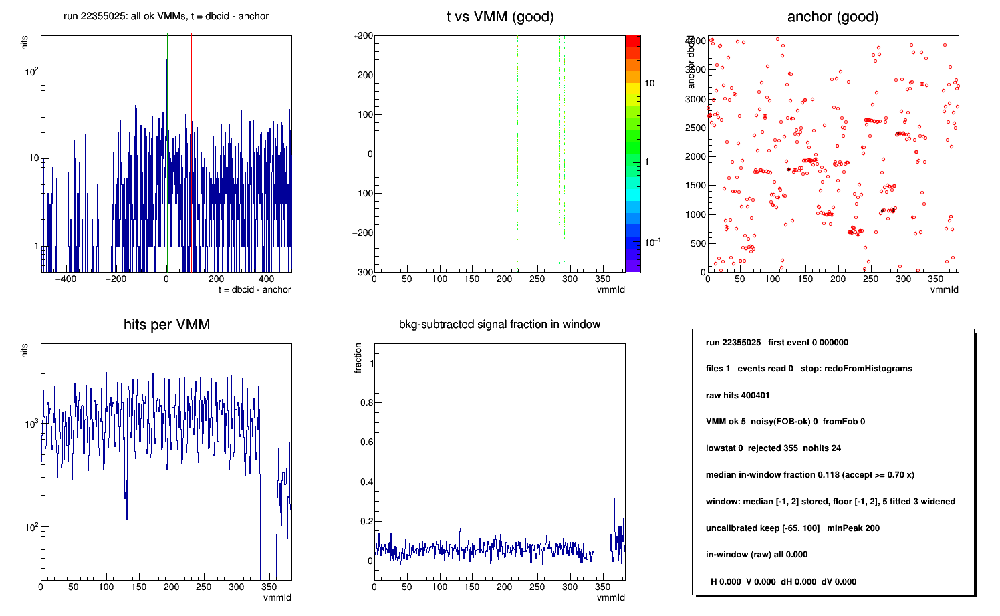
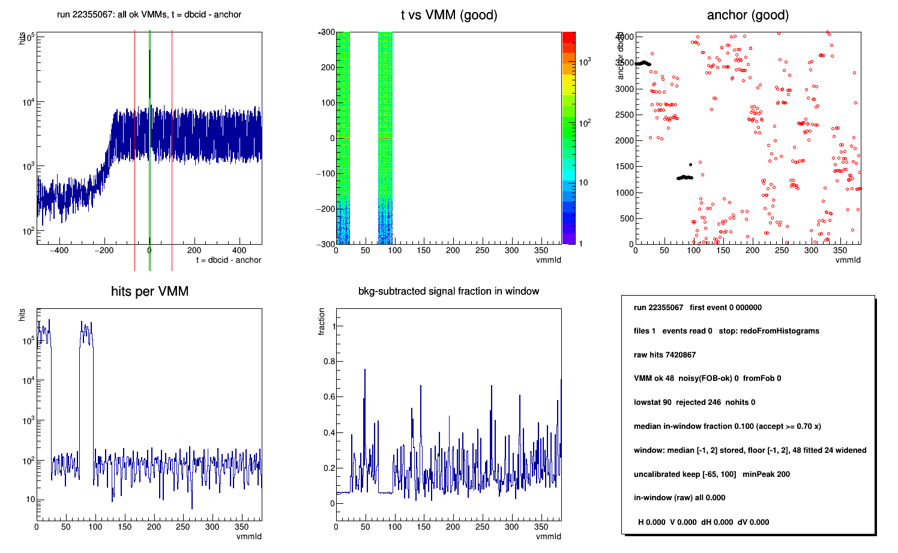
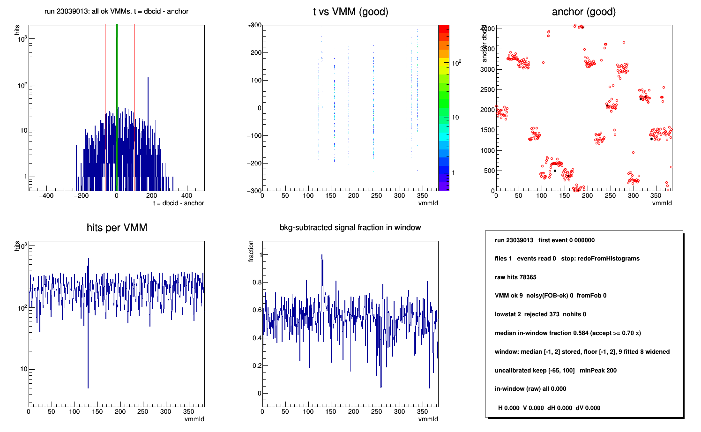
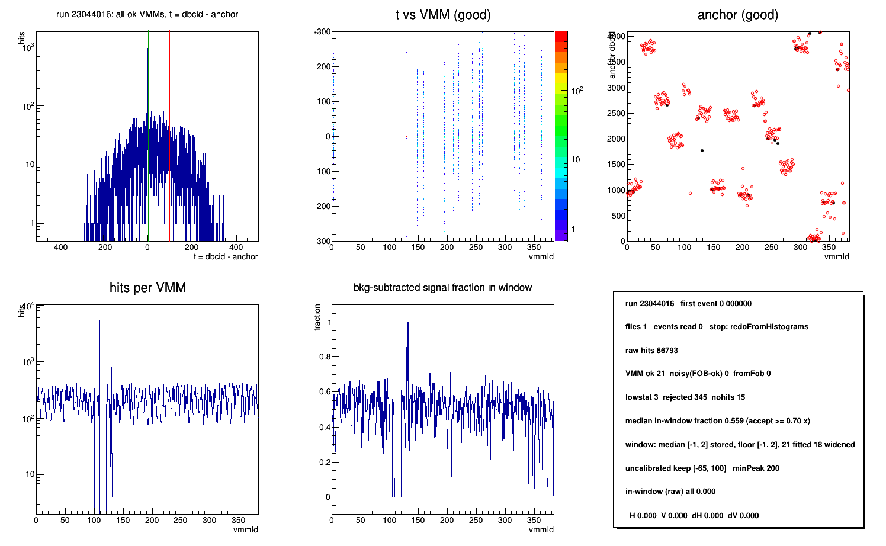
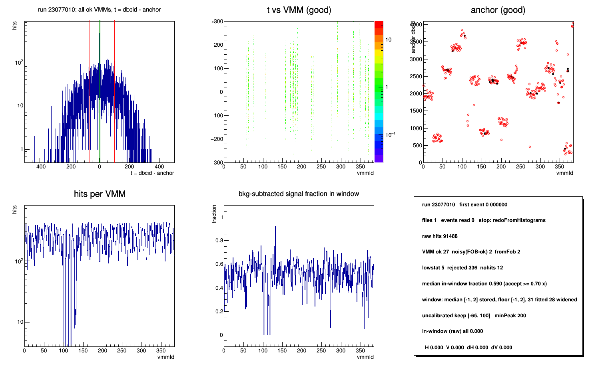
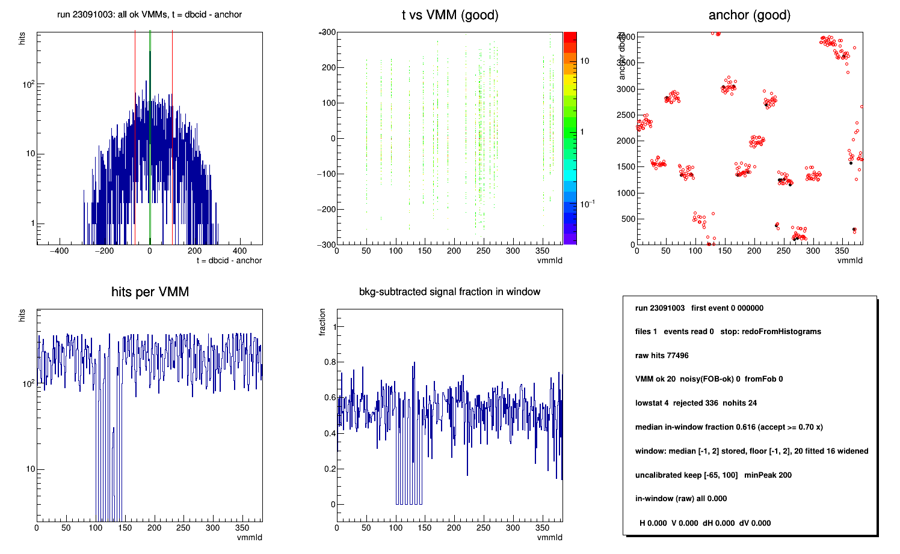
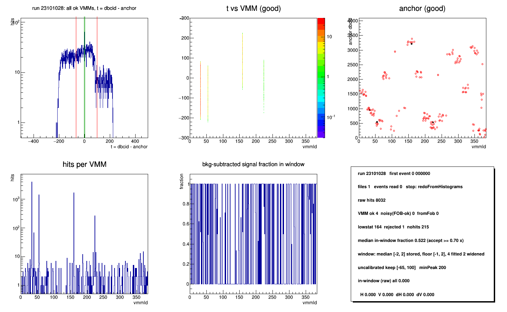
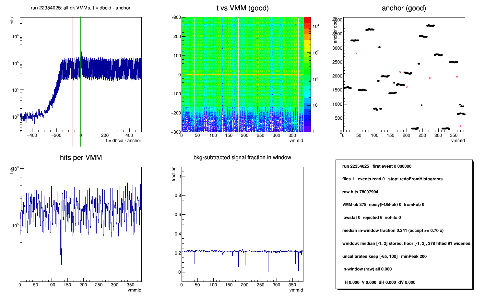
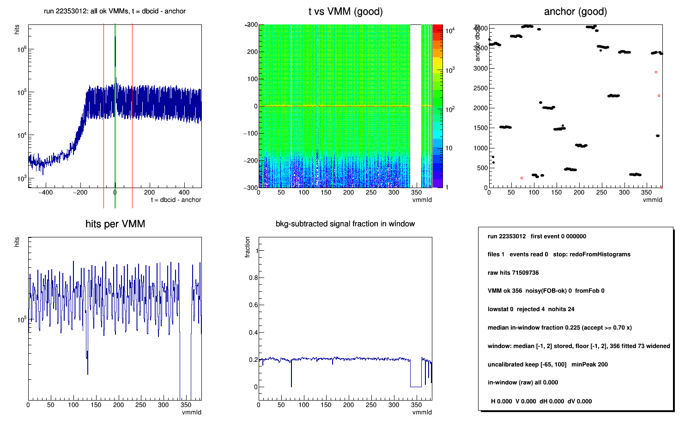

Per-VMM dbcid anchors and time windows for every run of Run 22, ready to go into Calibrations/ftt/fttDataWindowsB. Nothing has been written to the database yet.
Method, plots and all the detail are on the earlier page: FTT per-VMM uuid vs. time diagnostic — why anchors must be per run, how the window is measured, how the run stamp keeps one run from using another run's anchors, and what every QA column means. This page only adds the full-dataset pass and the runs that failed it. Straight to the parts this page leans on: per-run anchors and the QA columns · how the window is measured, and why it may only open · how to run the four macros.
One condor job per run. Run 22 is calibrated from David Kapukchyan's forward QA ROOT files (H2S_FttRawHit_dbcidVch_<vmm>, all 384 VMMs) rather than from MuDsts, so there is no reconstruction pass in the loop — same dbcid() field, same vmmId(), no time cut applied. The two zero-field sets below came from MuDsts and are unchanged.
| dataset | calibrated | no FTT data | failed the gate | QA text | calibrations | plots |
|---|---|---|---|---|---|---|
| Run 22, all runs (2021-12-15 .. 2022-04-18) |
3016 runs | 134 runs | 7 runs | fttDataWindow.Run22.qa.txt (3145 rows) |
fttDataWindow.Run22.calib.tar.gz (24 MB, 3016 files + empty/) |
png/ — 9 runs only (all 3016 would be 270 MB) |
| zero field 2022 | 49 runs | 3 runs | — | fttDataWindow.2022.qa.txt | zf2022/ | png/ (all runs) |
| zero field 2024 | 12 runs | 1 run | — | fttDataWindow.2024.qa.txt | zf2024/ | png/ (all runs) |
Working area for Run 22, not copied here (20 GB, mostly condor logs): /gpfs01/star/pwg_tasks/FwdCalib/akio/FttDataWindows22/data. Macros: fttDataWindow.C (produce), fttDataWindow_db.C (push), README.
Reading the Run 22 QA text. Columns are the same as the zero-field tables (see "Reading the QA table"), with three that are blank by construction in this pass: date, time and events are 0 and the five in-window fractions are 0.000, because the input is a histogram file with no event records — stop reads redoFromHistograms for every row. Those zeros are not failures. The columns that carry the result are rawHits, nOK and the window wLo/wHi.
Health over the 3016 calibrated runs, of 384 VMMs: mean nOK 337.5, median 360, 5th percentile 48. Median raw FTT hits per run 18.9 M. Run median window [-1, 2], matching the one-crossing window of section 5 of the earlier page.
| bucket | runs | what it means |
|---|---|---|
| would INSERT | 2966 | nothing in the DB for this run yet |
| would need "update" | 43 | in the DB and differs — all of them run 23081xxx, the 58-run batch pushed 2026-10-16; 3 to 46 of 385 slots moved. A plain writedb will not touch these. |
| already identical | 0 | — |
| fails the quality gate | 7 | section 3 — not to be stored |
| skipped | 0 | every run resolved its start time from RunLog |
So the push is two commands, not one:
root4star -l -b -q 'fttDataWindow_db.C(0,"writedb", "<dir>")' # the 2966 root4star -l -b -q 'fttDataWindow_db.C(0,"writedb update","<dir>")' # the 43
beginTime is the run's own start time from RunLog minus 10 s. Each entry carries the run number in spare slot 384, so StFttDbMaker applies the anchors only to the run they were measured on and falls back to window-only for any other run.
Six of the seven are starved of statistics, not mis-timed. The median run has 18.9 M raw FTT hits and the 5th percentile 6.5 M; these have 8 k to 400 k, i.e. a few hundred hits per VMM. With that little data a VMM's in-window fraction scatters below the 0.7 × run-median cut and it is rejected, which is why rej is large while lowS stays small — lowS counts VMMs below an absolute hit threshold, rej counts VMMs whose fraction failed. Short runs, not broken ones.
22355067 is the real outlier: 7.4 M hits, above the 5th percentile, and still only 48 of 384 VMMs converge with 90 low-statistics and 246 rejected. That one is a genuine timing or threshold problem in the run. 23101028 is a third case — 215 dead VMMs and 8 k hits, the detector was largely off.
Recommendation: store none of the seven, rather than "force" them. With no entry of its own a run gets window-only from the stamp check, which is the honest answer when the anchors were never measured. Forcing them would put 4 to 48 measured anchors and ~340 anchor -1 into the DB and label the run calibrated.
| run | raw FTT hits | VMM ok | lowStat | rejected | dead | why | QA plot |
|---|---|---|---|---|---|---|---|
| 22355025 | 400 k | 5 | 0 | 355 | 24 | 2% of median statistics |  |
| 22355067 | 7.4 M | 48 | 90 | 246 | 0 | enough data, still fails — real timing/threshold problem |  |
| 23039013 | 78 k | 9 | 2 | 373 | 0 | 0.4% of median statistics |  |
| 23044016 | 87 k | 21 | 3 | 345 | 15 | 0.5% of median statistics |  |
| 23077010 | 91 k | 27 | 5 | 336 | 12 | 0.5% of median statistics |  |
| 23091003 | 77 k | 20 | 4 | 336 | 24 | 0.4% of median statistics |  |
| 23101028 | 8 k | 4 | 164 | 1 | 215 | detector largely off — 215 of 384 VMMs dead |  |
| run | raw FTT hits | VMM ok | rejected | dead | QA plot | |
|---|---|---|---|---|---|---|
| 22354025 | 78.0 M | 378 | 6 | 0 | about the best in the dataset |  |
| 22353012 | 71.5 M | 356 | 4 | 24 | typical: one FOB group dead, the rest clean |  |
In a good run the anchors sit in flat per-FOB plateaus of 4 VMMs; in the starved runs the same panel is scatter, which is the rejection in picture form. The 9 plots here were regenerated from the same input files and are bit-identical to the condor pass.
akio@bnl.gov